お寺カフェで整う精進料理。
日常の延長として
ふらっと立ち寄れる、
あたたかみのある空間を
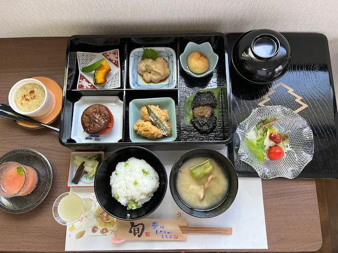
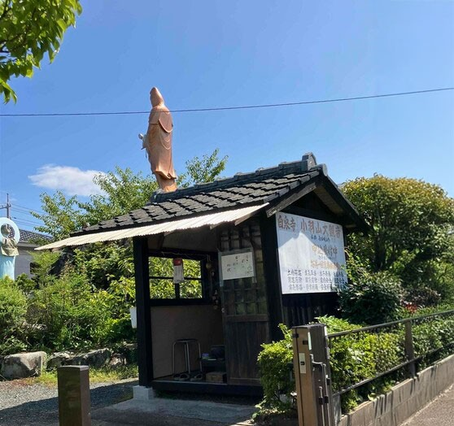
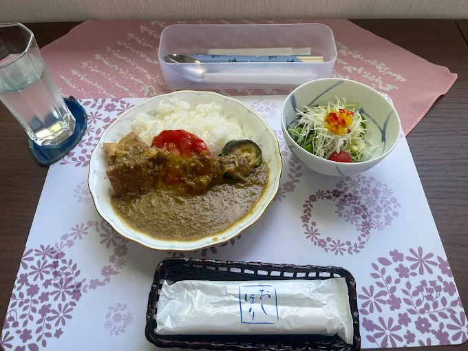
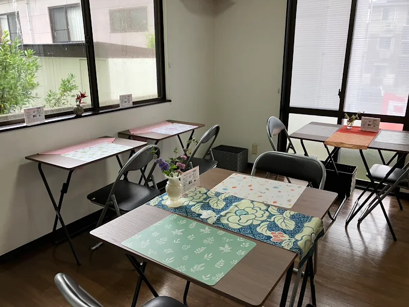
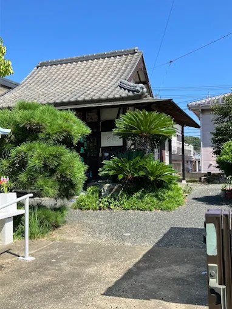
お寺の落ち着いた空間の中で、
ゆったりとした時間を過ごせるカフェ。
肉魚・五辛（ごしん）を使わず、
精進だしを活かした料理が心身を整えます。
歴史ある建物の温もりと庭園の静寂に包まれ、
日常を忘れ自分に還る「安らぎのひととき」をどうぞ。
そんな方に、
癒される空間と食事が
そっと寄り添います。
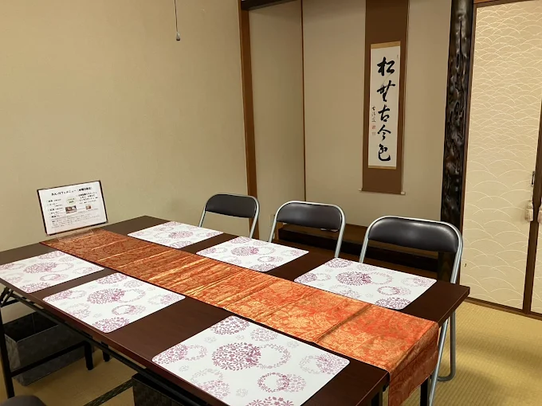
お寺の静かな環境の中で、日常の喧騒を離れ、ゆったりとした時間をお過ごしいただけます。
自然と心が落ち着く空間は、観光の合間の休憩やリフレッシュにも最適です。
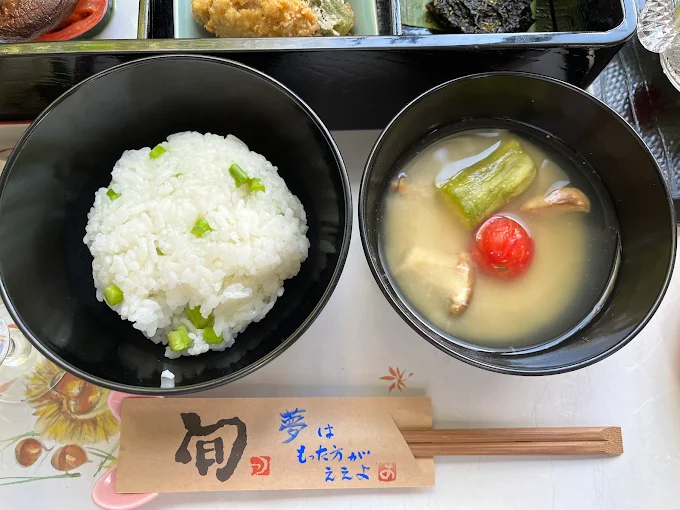
プロの視点で整えた献立は、優しくも確かな満足感。
精進料理が初めての方も、心まで満たされる「整う一皿」をどうぞ安心してお楽しみください。
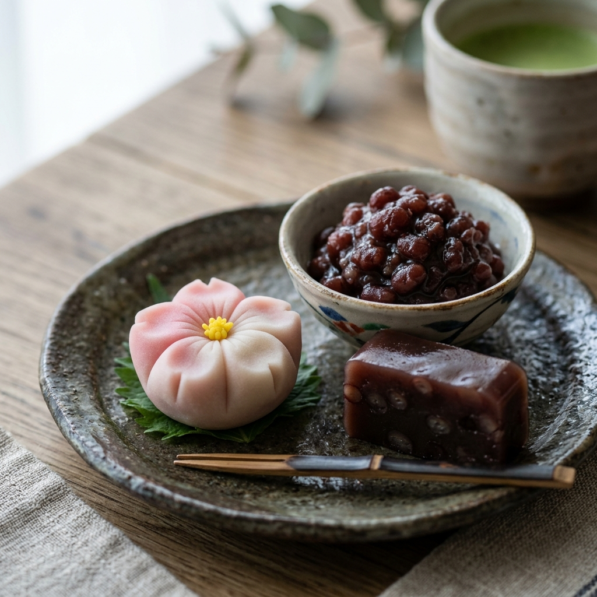
あんこをはじめとした和スイーツは手作りにこだわり、やさしい甘さで仕上げています。
食後のひとときやカフェ利用としても満足いただけるラインナップです。
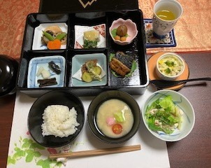
1,500円
（10食限定・要予約）精進料理をベースに、どなたでも気軽に楽しめるやさしい味わいのランチをご用意しています。
肉や魚を使わず、五辛を除いた植物性の食材を中心に仕上げた、心も身体もほっとする一膳です。
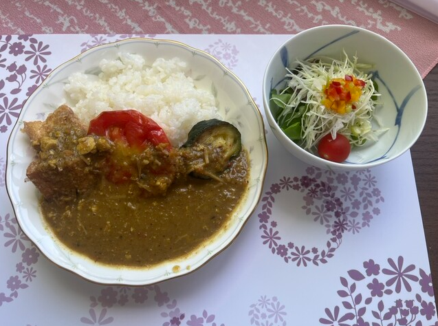
500円
ニンニク、ニラ、ネギ、玉ねぎ、らっきょうの五辛（ごしん）も除いた、植物性の食材のみを使用した本格精進カレー。
ワンコインで心もお腹も満たされる、滋味深い一皿をお楽しみください。
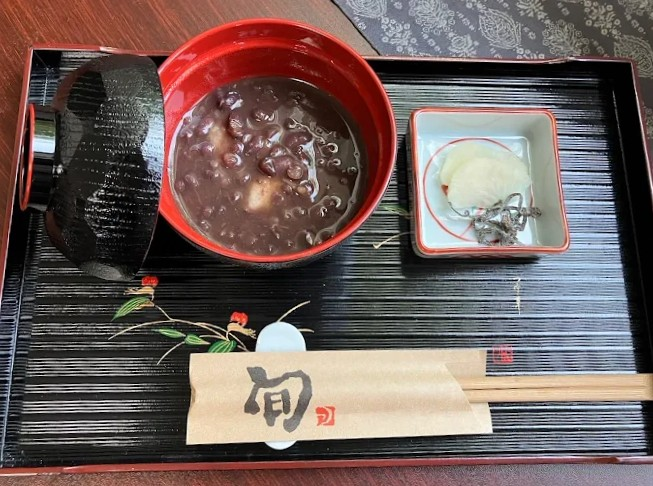
500円
店主が丁寧に炊き上げた「あん」は、心ほどける優しい甘み。
お寺の静寂に溶け込む、至福のデザートです。
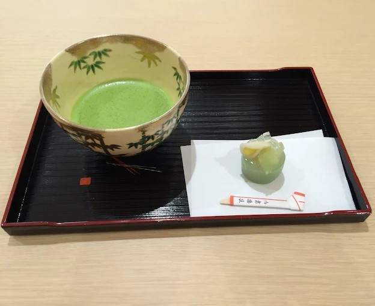
500円
本格的なお抹茶と、目にも美しい主菓子。
日常を忘れ、凛とした「和」の心に触れるひとときを。
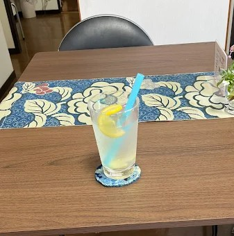
400円〜
旬の果実や素材を活かした、心身を爽やかに整える一杯。
精進カレーとの相性も抜群です。
お電話でのご予約・お問い合わせ
050-5448-9590Webからのお席予約
食べログ予約はこちら
お寺は本来、どなたでも立ち寄れる「安心（あんじん）」の場所。
忙しい手を少し休めて、美味しい精進料理と甘味で
自分を労わってあげませんか？
お庭を眺め、ゆっくりと呼吸を整える。
そんな何気ないひとときが、明日への力になりますように。
皆様のお越しを心よりお待ちしております。
Cafe
Address
〒755-0083
山口県宇部市南小羽山町２丁目１−６
Tel
Open
水曜日 11:30 - 16:00
日曜日 11:30 - 16:00
Close
月・火・木・金・土曜日
Payment
現金のみ